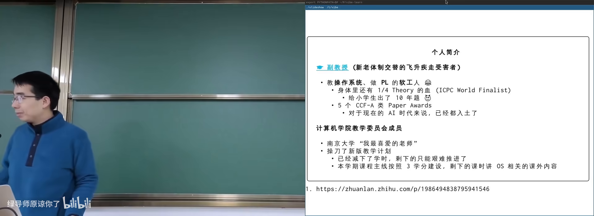
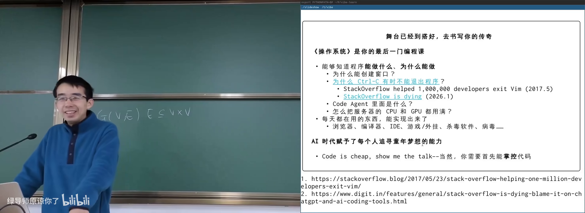
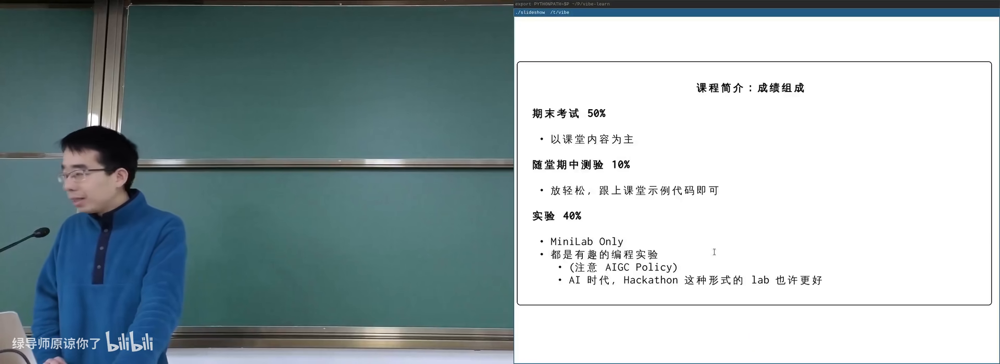
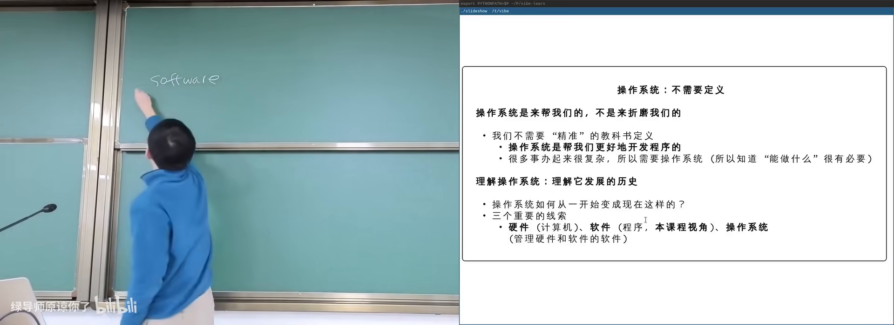
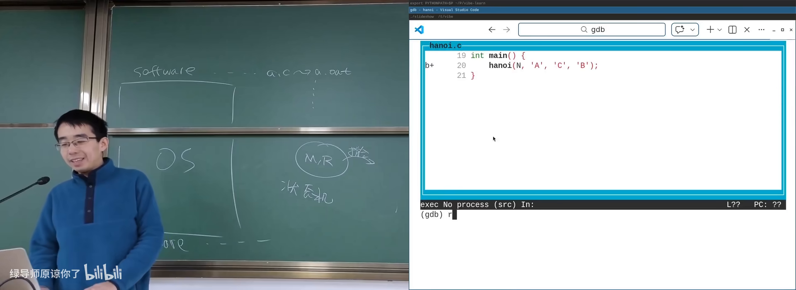
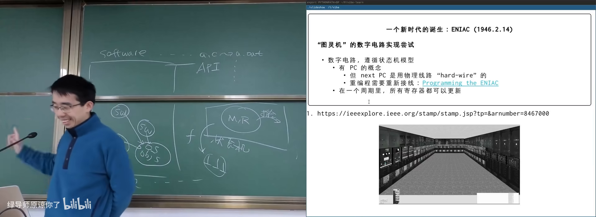
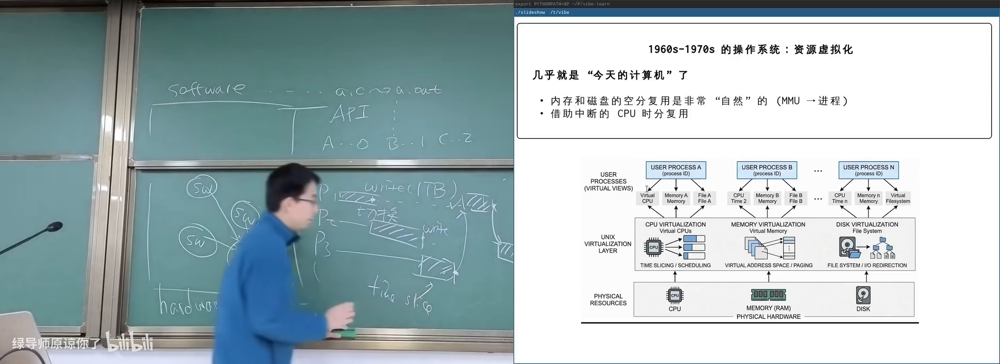
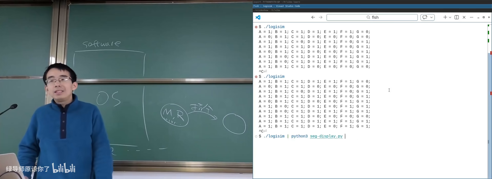
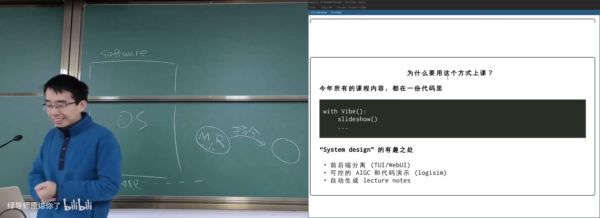

原视频：Bilibili · BV1opAfzpEf9 课程：NJU《操作系统原理》2026 第 1 讲 整理说明：本书由视频语音转录后经 AI 重构而成，口语已转写为书面语；关键时间点均标注 (参考时间)，截图卡片可跳转视频对应位置。
1. 为什么在 AI 时代还要学操作系统
(参考时间: 00:00)
主讲人以「AC 5 年」（GPT 诞生后的第 5 年）开篇，指出过去五年计算机世界发生了巨大变化：模型能力从「从 50 数到 100 都会卡」进化到 IMO/IOI 金牌水平，推理速度可达每秒上万 token，Coding Agent 也从聊天框进化为「有手脚、能改文件」的智能体。
在这一背景下，许多同学会问：既然 AI 什么都能写，为什么还要学操作系统？
软件曾是物理世界的投影
在 AI 之前，计算机只能求解用数学语言精确定义的问题（如图上的最短路径）。软件工程师的核心工作，是把物理世界中不规则的需求，翻译成计算机可以求解的问题——也就是「软件是物理世界在信息世界的投影」。
如今 AI 非常擅长完成这类翻译：自然语言描述不清的需求，它也能猜一个合理实现。这使得「顶级劳动力」的价值受到挤压。
AI 仍做不了的事
(参考时间: 00:29)
AI 目前在复杂系统的顶层设计上仍显不足。操作系统正是这样一个抽象：
- 它要支撑百万、千万级应用生态；
- 设计接口时既要底层好实现，又要对上层开发者友好；
- 还要能一层层长出完整的软件世界。
本门课的 takeaway message 是：如何设计一个好的抽象层（把复杂性隔在上下两层之间，中间只留简单接口），依赖下层接口，给上层提供服务。

AI 时代操作系统课的目标在 B 站打开 (00:01:35)
操作系统还是 AI 的「手脚」。没有操作系统提供的网络、文件、虚拟环境，AI 写脚本、拉数据、改本地文件都无从谈起。
学习态度的转变
(参考时间: 00:38)
经典格言 Talk is cheap, show me the code 在 AI 时代反转为：Code is cheap, show me the talk——只要能把问题说清楚，AI 就能帮你生成答案。但前提是你要真正掌控计算机，操作系统课能提供这种启发。

Code is cheap, show me the talk在 B 站打开 (00:38:30)
2. 课程安排与成绩构成
(参考时间: 00:03)
课程按 3 个学分组织：两周 4 次课，其中 3 次讲正课，1 次为 Hacking Day（与 OS 相关但不计入考试的课外内容）。
| 项目 | 占比 | 说明 |
|---|---|---|
| 期末考试 | 50% | 课堂理解了即可应对 |
| 随堂测验 | 10% | 约五一前后；缺席则以期末成绩代替 |
| 实验 | 40% | 编程为主，含实现大语言模型推理器 |

课程主页与成绩构成在 B 站打开 (00:06:30)
学习与 AI 的边界
课程鼓励用 AI 辅助学习（读文档、问 API），但实验中禁止直接让 AI 代写作业的完整实现——只允许就局部 API 用法提问。原因是：真正理解操作系统 API 的能力，是掌控计算机软件的基础。
重要信息通过邮件推送；每周四下午 16:30–17:30 为 office hour。课程主页承载全部资料，支持直播与录播。
3. 什么是操作系统：硬件与软件之间
(参考时间: 00:39)
教科书定义：操作系统是 a body of software，让程序能够运行、共享内存、与设备交互。主讲人认为不必死记定义——压缩损失太多，应从历史发展理解它怎么变成今天的样子。
三条线索
操作系统管理硬件与软件，因此有三条线索：
- 硬件：操作系统直接接管的底层资源；
- 软件：应用程序（终端、浏览器、Agent 等）；
- 操作系统本身：夹在硬件与软件中间的那一层。

硬件、软件与操作系统三者关系在 B 站打开 (00:43:40)
硬件是状态机
状态机（系统在每一刻处于一个确定状态，执行一步后迁移到下一个状态）：硬件的状态是内存和寄存器里所有 bit 的取值；每执行一条指令，状态迁移一次。
指令集（CPU 认识的指令集合，决定机器能做什么）：取指、译码、执行——循环往复。数电中的导线、时钟、逻辑门、触发器四种元件就足以构造任意数字系统。
状态转移图（画出「当前状态 → 下一状态」关系的图）：计数器 00 → 01 → 10 → 11 是最简单的例子。
主讲人现场展示了一个数字逻辑电路模拟器：打印 A=0 B=1 这样的文本，再通过管道接到另一个程序，就得到真实的数码管显示。这体现了 UNIX 管道组合复用的威力。
软件也是状态机
(参考时间: 00:58)
a.c 经过编译链接变成 a.out，程序在 CPU 上运行时同样是一个状态机：寄存器 + 内存 + 程序计数器（PC，指示「下一条要执行的语句在哪里」）。
用 GDB 调试汉诺塔递归时，每一步都是状态迁移。栈帧（函数调用时在栈上分配的一块保存局部变量和返回地址的空间） 堆叠起来构成调用历史。

GDB 调试汉诺塔：软件作为状态机在 B 站打开 (01:01:50)
4. 操作系统简史：从无到有时分复用
(参考时间: 01:05)
操作系统怎么从 1940 年的「没有」走到今天的现代系统？三个里程碑：
timeline
title 操作系统三大里程碑
1940s : 无操作系统<br>程序直接操作硬件
1950s : 作业调度<br>跑完一个再跑下一个
1960s-70s : 多道程序<br>程序等待 IO 时可切换
1970s+ : 时分复用<br>中断驱动的时间片
1940 年代：没有操作系统
ENIAC（1946）用真空管和延迟线存储，程序以打孔纸带形式输入。当时的目标仅仅是「让程序跑起来」，所有程序直接操作硬件。延迟线（把数据编码成线上波形循环传输以临时保存）是天才但原始的存储方案。
最早的软件包括打印素数表——这解释了为何编程课第一课常是判断素数。bug 一词也来自真实飞虫卡在继电器里。

ENIAC 与打孔纸带时代在 B 站打开 (01:06:00)
1950 年代：作业系统
一台计算机价值数万到百万美元，全校共用。多任务排队需要公共软件来管理加载、切换、终止——作业调度（决定哪个程序先上机运行的机制） 应运而生。繁体中文将 OS 译作「作业系统」正源于此。
1960–70 年代：多道程序与分时
集成电路让内存大于单个程序，多个程序可同时载入。当 P1 执行 write 等待 IO 时，CPU 可切换给 P2——操作系统获得了切换与恢复能力。
再进一步，时钟中断可以在任意时刻打断程序，实现时间片（每个程序轮流占用 CPU 一小段时间）。这解释了：为何死循环不会让整机卡死。

多道程序与时间片切换在 B 站打开 (01:29:20)
Unix 定调
1973 年 Unix 体系基本完善：信号、管道、grep；1983 年 socket；1984 年 procfs。此后衍生出 BSD、GNU、Windows、Linux、macOS、iOS、Android 等庞大系统。核心理念始终未变：管理程序的软件。
5. 抽象层与 UNIX 哲学
(参考时间: 00:32)
从应用视角看，操作系统就是一组 API（应用程序请求系统服务的调用接口）。程序通过系统调用访问操作系统里的对象：文件、磁盘、显卡、其他进程。
抽象层设计
好的抽象层：
- 上下两层各自可以很复杂；
- 中间接口保持简单稳定；
- 支撑上层生态生长。
同样模式可推广：多机集群 → 分布式系统 API；GPU 多核 → CUDA；存储设备 → 文件系统。
UNIX 哲学的启示
UNIX 提供可组合的小工具，工具之间通过管道连接。编程语言的威力在于无限组合与低成本复用——AI 的 skills/MCP 目前还缺少这一特性。
flowchart LR
A[电路模拟器<br>输出 A=0 B=1] -->|管道| B[渲染程序<br>填入数码管模板]
B --> C[终端显示数码管]
管道把一个程序的输出作为下一个程序的输入，不断串接即可搭出复杂系统。这是 AI 时代仍值得反复回味的设计。

UNIX 管道：模拟器 + 渲染 = 数码管在 B 站打开 (00:56:00)
6. 怎么学这门课
(参考时间: 01:32)
学习操作系统，学的是：
- 基本动机：为什么需要这个机制；
- 基本方法：人类如何想到并实现它；
- 里程碑与弯路：哪些设计留下来了，哪些被抛弃。
AI 时代学习方式已变：你只需要抓住几个 first principle（状态机、API、抽象层），细节可以随时问 AI。主讲人自己的上课系统把讲义全部代码化，可自动生成 lecture notes，甚至让 AI 按听众背景定制讲法。
给同学的建议
- 不要为眼前的分数牺牲长期能力；
- 做出有亮点的东西比刷分更能体现价值；
- 实验中亲手写与操作系统 API 交互的部分；
- 有任何问题发邮件，保证回复；也可以先问课程 AI 工具。

课程代码化：讲义即代码在 B 站打开 (00:49:00)
附录：概念补给
状态机
- 是什么：系统每一刻处于一个状态，按规则迁移到下一状态。
- 课上为何出现：硬件和软件都可以用同一模型理解。
- 和什么像：红绿灯、游戏存档点。
指令集（ISA）
- 是什么：CPU 能识别并执行的指令集合。
- 课上为何出现：硬件状态迁移的规则；也是操作系统与硬件之间的抽象层。
- 和什么像：一门语言的词汇表和语法规则。
程序计数器（PC）
- 是什么：指示下一条要执行指令/语句位置的寄存器。
- 课上为何出现：GDB 里高亮的那一行就是 PC。
- 常见误解：PC 不是「个人电脑」，在本课语境中是 Program Counter。
栈帧（Stack Frame）
- 是什么：一次函数调用在栈上占用的局部变量与返回地址区域。
- 课上为何出现：解释递归与函数调用的状态机模型。
- 和什么像：叠放的便签，每层记着自己从哪里来。
抽象层
- 是什么：隔开上下两层复杂性的中间接口。
- 课上为何出现：本课核心 takeaway；操作系统、指令集、游戏引擎都是抽象层。
- 常见误解：抽象不是「模糊」，而是「上层不必知道下层细节」。
系统调用（System Call）
- 是什么：应用程序请求操作系统服务的唯一正式通道。
- 课上为何出现：从应用看，OS 就是一组 API。
- 和什么像：到医院签手术同意书后全麻——你不知道过程，醒来事情已办完。
作业调度
- 是什么：决定多个排队程序谁先上机运行的机制。
- 课上为何出现：1950 年代计算机昂贵，OS 最早的职责之一。
- 和什么像：医院挂号分诊。
时间片 / 分时复用
- 是什么：CPU 轮流给每个程序一小段执行时间。
- 课上为何出现：死循环不卡死整机的原因。
- 和什么像：多个窗口轮流显示，感觉上「同时」在用。
管道（Pipe）
- 是什么：把一个程序的输出接到另一个程序输入的机制。
- 课上为何出现：UNIX 哲学的体现；工具可无限组合。
- 和什么像：流水线上工位之间的传送带。
延迟线存储
- 是什么：早期用线上传输的电脉冲循环来保存 bit 的存储技术。
- 课上为何出现：解释 1940 年代计算机如何在没有 DRAM 时工作。
- 和什么像：不停甩绳子，用绳波形状编码 0/1。
Firmware / BIOS / UEFI
- 是什么：厂商固化在硬件里、CPU 复位后最先执行的代码。
- 课上为何出现：没有操作系统时，机器靠固件完成初始化并加载 OS。
- 常见误解：BIOS 是 UEFI 的旧称呼之一，现代机器多用 UEFI。
Agentic AI
- 是什么：能调用工具、与环境交互、自主完成多步任务的 AI 程序。
- 课上为何出现：本课所处时代背景；OS 是 AI 的手脚。
- 和什么像：不只会聊天的实习生，还能自己开电脑干活。
书架 Shelf 流水线生成 · 内容衍生自 B 站公开课程视频 BV1opAfzpEf9